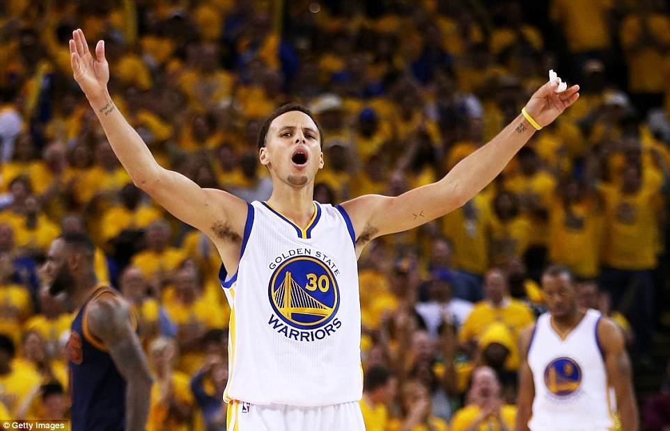
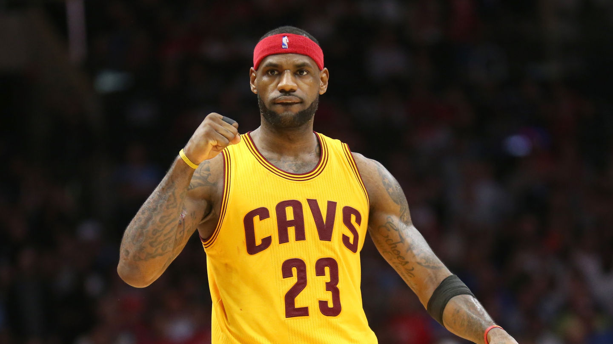
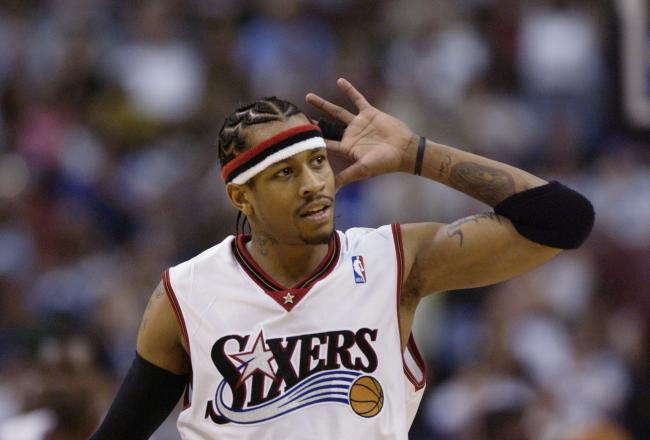
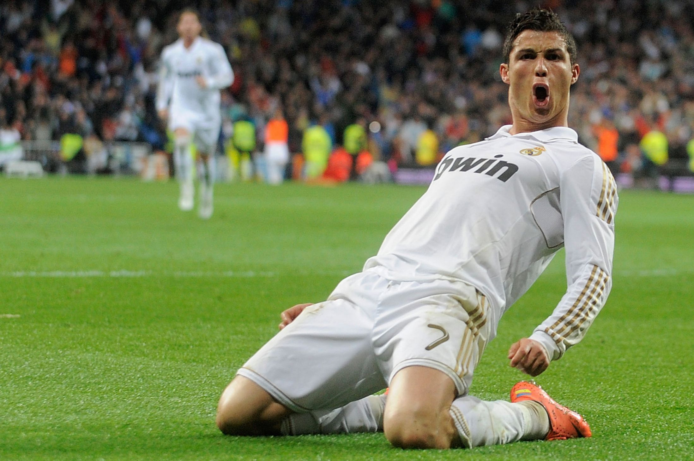
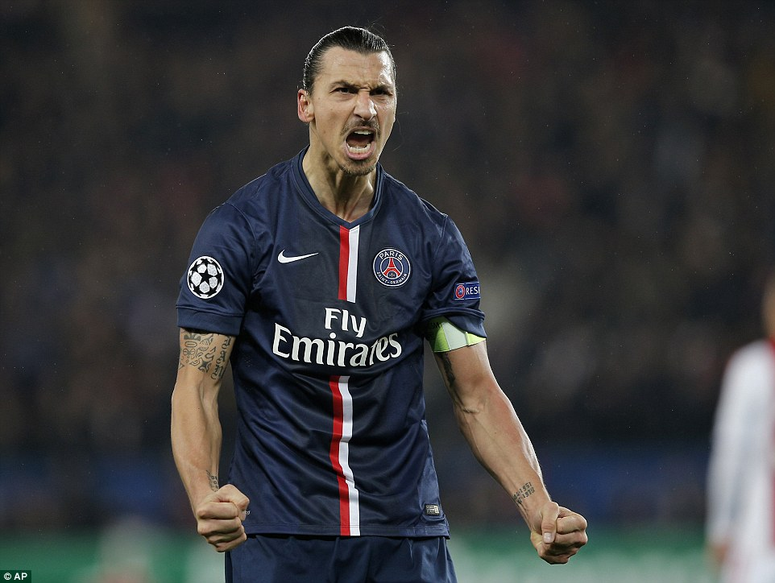
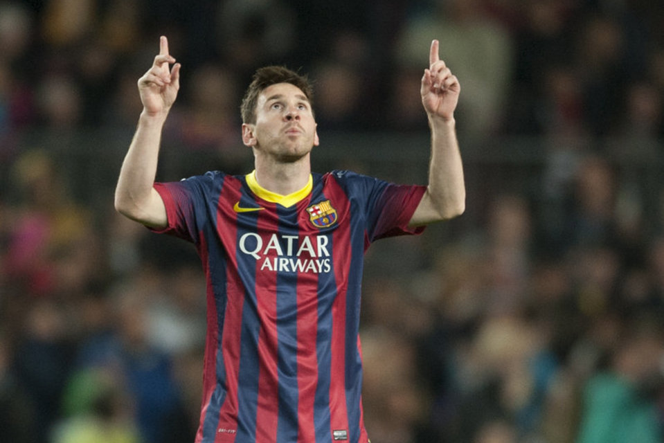

Welcome!
Thank you for visiting my site. Here, you will find interesting information on a few dominant players to have played either of my two favorite sports: basketball and soccer. Below, you will notice some brief information about these athletes, before going to their pages.
Stephen Curry
Steph Curry is the NBA's reigning MVP and the league's most recent champion with the Golden State Warriors. He is known for his insane ability to hit shots from almost anywhere on the court. Take a look at his page, and watch the amazing video of the 10 top plays of his professional career.
LeBron James
For nearly a decade, LeBron James has been known as not only the best player in the NBA, but arguably the best player that the league has ever had. With such a huge title, criticism surely follows. But one thing is for sure, his skills never fail to entertain fans and when he takes off for a dunk, the person under the rim should run for cover!
Allen Iverson
When you think of Allen Iverson, the first thing that should come to mind is excitement. This is the first basketball player that I noticed when I was young and he is the reason that I became interested in the sport. A.I. is one of the greatest scorers and one of the most charismatic players to ever play the game of basketball. He is most famous known for a press conference where he talks about how he doesn't need practice. Watch his video to find out why.
Cristiano Ronaldo
Cristiano Ronaldo is considered one of the geratest soccer players in the world. Holding records for two different soccer clubs (Manchester United and Real Madrid) and his countries national team (Portugal), Ronaldo seemingly goes down in history every time that he takes the field. His top 10 video will show you why.
Zlatan Ibrahimovic
Zlatan Ibrahimovic is a man amongst boys when he is on the soccer field. Standing at 6'5 and 209 lbs., Ibrahimovic is a force to be reckoned with. He is known for his brute strength and ability to hit shots far beyond the penalty box. Take time to watch his video and witness some of his unbelievable shots.
Lionel Messi
Lionel Messi is arguably the greatest soccer player in the world. This is arguable because some will say that Cristiano Ronaldo is. Whatever the case may be, Messi's speed, ball control, scoring ability, and leadership skills are hard to compete with. Especially for the defenders that dare to go up against him one-on-one. Watch Messi's Top 10 video as he maneuvers around opposing's teams, scoring at will and making these professional defenders look like amateurs.